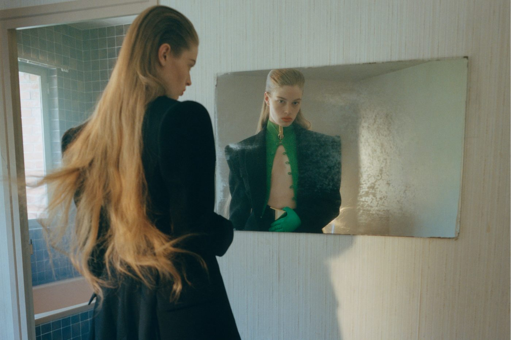
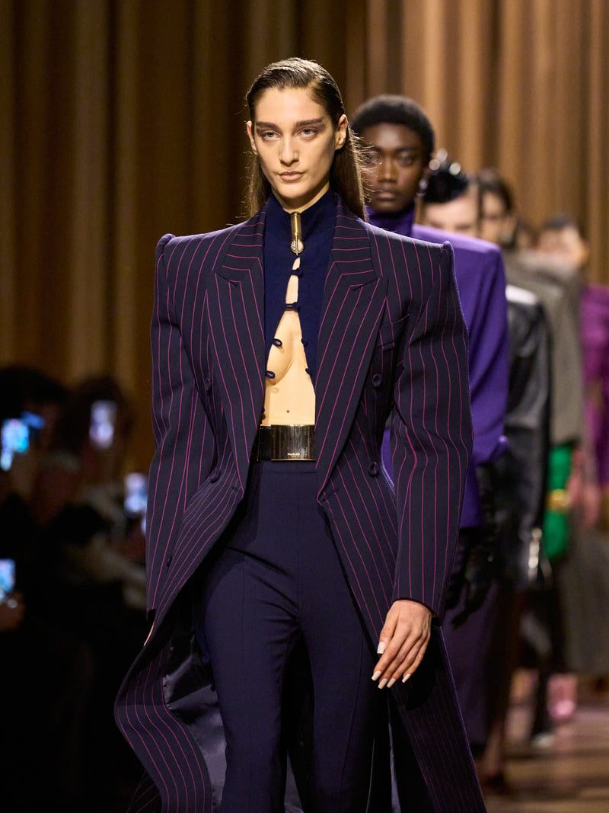
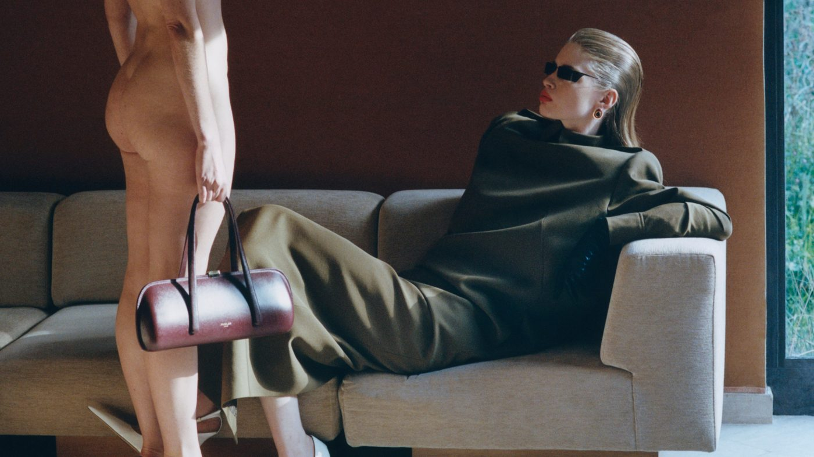
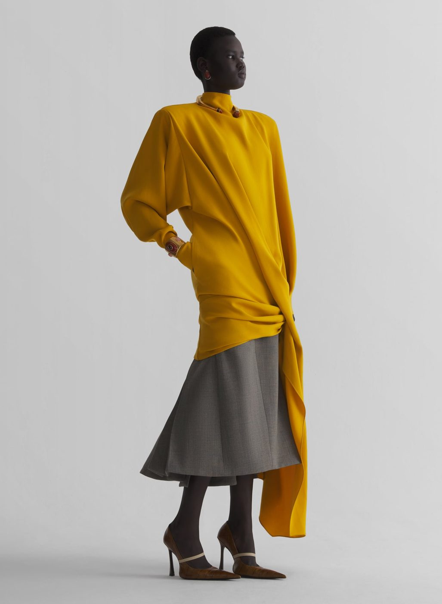
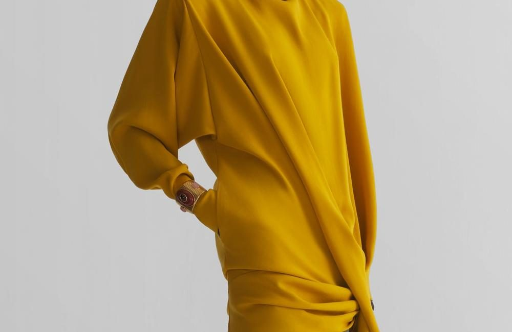
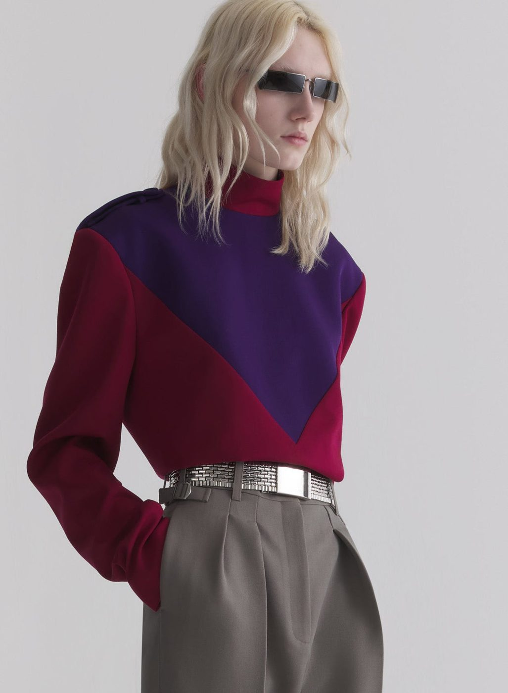

Company study · 2026-11-16
Mugler
Visual study (mood board) of Mugler, a Paris fashion house: design and style from its website and Fall-Winter 2026 campaign images.
Mood
Controlled, cinematic and sculpted. The Fall-Winter 2026 pages show a quieter Mugler than its glossy reputation: black velvet and tailoring, taupe wool, one mustard or wine accent, shot against studio gray or in staged rooms. Positioning is power dressing as armor and performance: shape first, surface second.
 (01)
(01)

(02)

(03)

(04)

(05)

(06)

(07)Palette, measured from the images
#CCCBCC#121316#36302C#7B756C#36192E#3D240DVisual themes
01 Power dressing as armor. Key motifs: padded shoulders, peaked lapels, pinstripe, metal belts. Sub motifs: wide trousers, belted waists, tailoring worn open over skin.
02 Staged tableaux. Key motifs: mirrors, sofas, timber and velvet rooms, a dog. Sub motifs: teal pools of light, red accents, film-still crops.
03 Studio looks. Key motifs: single full-length model on gray, front and back views. Sub motifs: draped knits, color-blocking in mustard, wine and violet.
Color palette (how many images each comes from)
Studio gray #cccbcc. 8 of 12 images (look-book ground).
Black #121316. 10 of 12.
Dark umber #36302c. 12 of 12.
Taupe #7b756c. 10 of 12.
Aubergine #36192e. 5 of 12.
Timber brown #3d240d. 6 of 12.
Interface colors (site CSS, separate from product colors). near-black #000000 and #121212, light gray #E0E0E0 and #F3F3F3, white, and a red #B31312 that appears once, most likely for errors or sale. the interface is black, white and gray so the images carry all color.
Hero material
Product copy names a tailored jacket with padded shoulders and a draped cascade, and croc-embossed leather for the Aurora bag (https://fashion.mugler.com/products/black-draped-jacket and /collections/bags, retrieved 2026-11-16).
The look is cut and drape: matte wool and knit held in hard shapes, with velvet and leather as the glossy notes. Close-up at (06).
Visual elements
Photography. Cinematic campaign (photographer Robi Rodriguez) in staged rooms; clean gray studio for the look-book, front and back, full length.
Type and graphics. Small lower-case sans for navigation, wide letterspaced MUGLER wordmark, collection names in lower case ("the commander", "the wardrobe of identities").
Layout habits. Home: full-bleed banner, then season tiles. Collection pages: a tight grid of full-length 3:4 portraits, two views per look. Hero type is a wide 3:2 banner or a stack of three portrait tiles.
Detail. Seams read as hard lines: shoulder pads, cutouts, a belt as the single metal note.
Copy voice. "power, desire and eroticism collide" and "The mythology of power dressing becomes armour and performance" (https://fashion.mugler.com/pages/fall-winter-26, retrieved 2026-11-16).
Visual story
banner for the new season, the runway show page, the Commander campaign, then collection pages by item (bags, dresses, bodysuits, shoes) and an archive re-edit capsule. story goes from spectacle to the single garment. Relation to the themes: Mugler is the counter case to T10 (quiet, tactile): its drama is shape and staging, and surfaces stay smooth and controlled. T9 (wear and the trace of process) appears only as the draped fold and hard seam, never as wear.
Notable products
Black draped jacket. Carries the cascade drape over padded tailoring.
Aurora bag. Croc-embossed leather as the one textured surface.
Mustard draped knit. Shows the one saturated color against gray.
Method and limits
Palette basis. twelve campaign and look-book images (01, 04, 06, 13, 14, 18, 21, 22, 26, 27, 28 and 07 from the home, Fall-Winter show and Commander pages); k-means in Lab, six clusters kept; model skin tones and gray studio ground are part of the measurement; no product-line analysis
Limits. Pages read on 2026-11-16 (10, plain HTTP fetch, no login): home https://fashion.mugler.com/; /pages/fall-winter-2026-show; /pages/fall-winter-26; /collections/the-commander-fw26-27; /collections/re-edit-archive-capsule; /collections/bags; /collections/dresses; /collections/bodysuits; /collections/shoes; and the product page /products/black-draped-jacket. Product-grid text is mostly navigation; most campaign copy came from the Fall-Winter 26-27 page. Only the 28 Commander and campaign images were downloaded; no fabric compositions or about page were read. Mustard and wine appear in only 2 to 4 images each and did not reach the measured palette, so they are not brand colors on this evidence. Candidates for a later deeper look only: the croc-embossed Aurora bag leather and the draped tailoring. A material specialist and reverse engineering are candidates only.
Image credits
- (01) Backless black gown and wine velvet in a timber room, hero banner. source (home page, file Untitled_design_4)
- (02) Long-haired model at a mirror, green top, campaign still. source (home page, file Untitled_design_19)
- (03) Pinstripe purple tailoring on the runway, gold drapes. source (file Mugler_F26_finale_03)
- (04) Reclining model in olive tailoring on a gray sofa, tubular bag. source (file Untitled_design_11)
- (05) Mustard draped knit over a taupe skirt, studio gray. source (file 26W1RO1884196_3067_2)
- (06) Close-up of the draped mustard knit, cropped from (05). source (crop of 26W1RO1884196_3067_2)
- (07) Wine and violet color-block knit with metal belt. source (file 26W1TO09291049_3077_2)
Images are the brand's own, shown for study only; each is listed above with its source page.